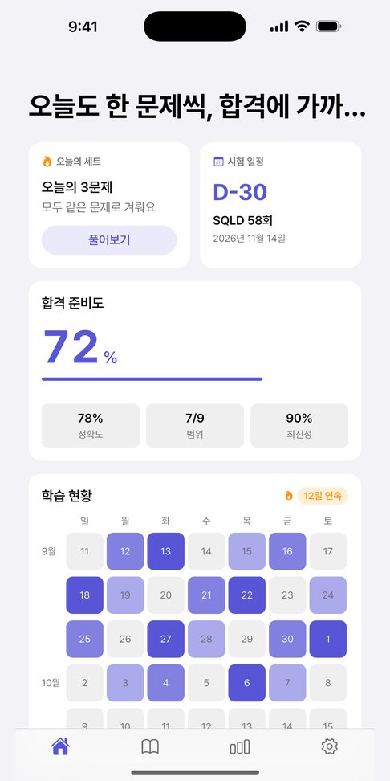
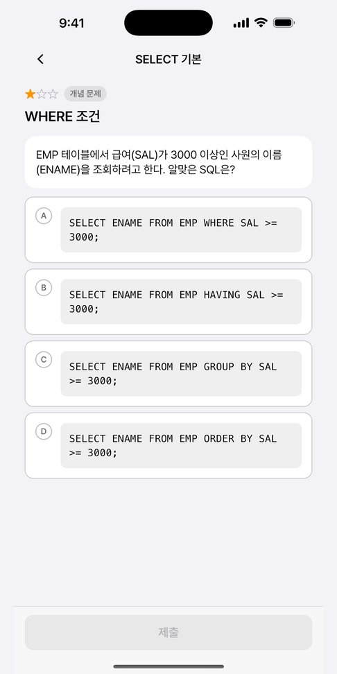
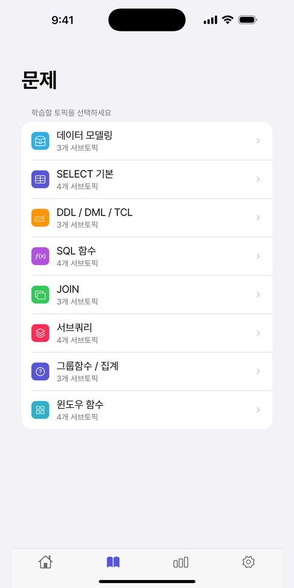
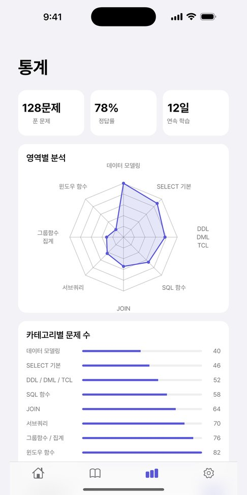
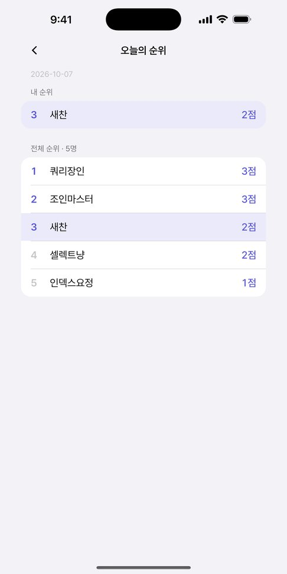

시험 범위 9개 주제를 문제로 풀고, 틀린 이유는 AI 해설로 바로 확인합니다. SQL을 직접 실행해 내 결과와 정답 결과까지 비교해 보세요.
무료 · Google 또는 Apple 계정으로 시작 · Android 앱은 출시 준비 중이며 웹으로 이용할 수 있어요

개념서만 읽으면 시험장에서 손이 안 나갑니다.
passQL은 풀고, 틀린 이유를 이해하고, 다시 푸는 과정만 남겼습니다.
SQL 자격증은 결국 문제를 얼마나 정확히 푸느냐로 갈립니다.
보기만 하는 문제가 아닙니다. 실행형 문제에서는 SQL을 직접 돌리고, 내 결과와 정답 결과를 표로 나란히 비교합니다.
정답만 알려 주지 않습니다. 내가 고른 답이 왜 틀렸는지, 정답과 무엇이 다른지 AI가 풀어 설명합니다.
주제별 정답률로 합격 준비도를 보여 줍니다. 약한 주제가 바로 보여서 다음에 무엇을 풀지 고민할 필요가 없습니다.
과목별 주제를 골라 풀거나, 섞인 세트로 실전처럼 풀 수 있습니다. SQLD 시험 안내 보기
매일 같은 흐름을 반복하면 약한 주제부터 메워집니다.
매일 새로 열리는 문제 세트를 풀고 리더보드에서 순위를 확인합니다.
AI 해설로 오답 이유를 짚고, 비슷한 문제를 이어서 풉니다.
틀린 문제만 모아 다시 풀며 약한 주제를 메웁니다.
문제 풀이부터 통계까지 그대로 보여 드립니다.




네, 무료입니다. App Store에서 내려받거나 웹에서 바로 시작할 수 있습니다.
SQLD 두 과목의 범위를 9개 주제로 나눠 문제를 제공합니다. 1과목 데이터 모델링, 2과목 SELECT·DDL/DML/TCL·함수·JOIN·서브쿼리·그룹함수·윈도우 함수·계층과 PIVOT입니다.
SQLP 필기의 데이터 모델링, SQL 기본 및 활용 과목은 SQLD와 범위가 겹쳐 그대로 연습할 수 있습니다. SQL 고급 활용 및 튜닝 과목과 실기는 아직 다루지 않습니다.
실행형 문제에서는 SQL을 직접 실행하고, 내 쿼리의 결과와 정답 결과를 표로 비교할 수 있습니다.
네. passql.vercel.app 에서 Google 또는 Apple 계정으로 로그인하면 앱과 같은 학습 기록으로 이어서 풀 수 있습니다.
Google Play 출시를 준비하고 있습니다. 그전에는 Android 휴대폰의 브라우저에서 웹으로 이용할 수 있습니다.